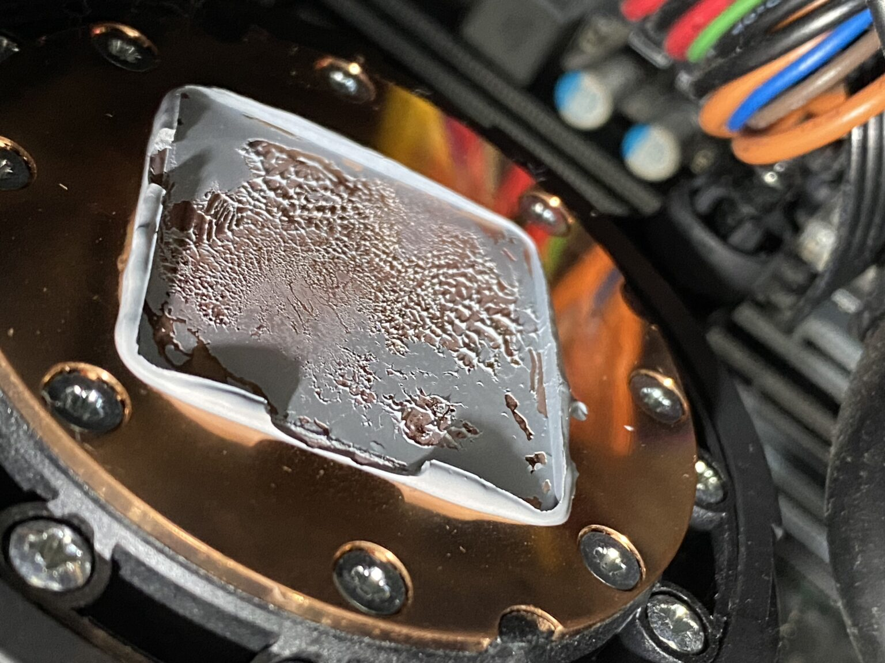

Ghidul Suprem pentru Aplicarea Pastei Termice: Optimizarea Răcirii CPU și GPU
De ce solidificarea compusului de fabrică blochează transferul de căldură către radiator și care sunt regulile esențiale pentru a preveni supraîncălzirea hardware.
Aplicarea sau reaplicarea periodică a pastei termice pe procesorul principal (CPU), pe placa video dedicată (GPU) și pe chipset-ul integrat este o procedură tehnică indispensabilă și obligatorie pentru menținerea sănătății oricărui calculator sau laptop. Această operațiune devine absolut vitală pentru echipamentele care au trecut de 3 ani de funcționare, indiferent dacă au fost utilizate intens sau au stat pornite moderat.
După această perioadă critică de utilizare, compusul termic aplicat în fabrică își pierde proprietățile fizice elastice, se solidifică complet, devine casant și izolează căldura în loc să o transfere eficient către radiator, ducând rapid la degradarea prematură a semiconductorilor.
Fără pastă termică, răcirea este imposibilă!

Foto: Aspectul unei paste termice complet uscate și solidificate pe talpa de cupru a unui radiator, fenomen care stopează disiparea căldurii.
De ce este necesară înlocuirea pastei pe procesoarele principale?
Procesorul central (CPU) și cipul grafic dedicat (GPU) sunt cele două componente dintr-o arhitectură hardware care generează cel mai mare flux de căldură. În timpul sesiunilor intense de gaming sau la rularea aplicațiilor software solicitante, nucleele acestor cipuri pot depăși cu ușurință pragul critic de 80°C.
Pentru a menține aceste piese în limitele optime de temperatură stabilite de producător, un radiator masiv de cupru sau aluminiu dotat cu ventilatoare (coolere) este presat direct pe pastila de siliciu. Deoarece suprafețele metalice nu sunt perfect plane la nivel microscopic, aerul blocat în micro-fante acționează ca un izolator termic.
Aici intervine rolul pastei termice: ea umple perfect aceste micro-spații de aer. Un compus premium conține particule ultrafine non-metalice sau metalice (carbon, argint, cupru sau oxizi de zinc) special proiectate pentru a asigura o conductivitate termică accelerată.
Efectele degradării consumabilelor și de ce trebuie înlocuite:
Ignorarea mentenanței preventive și funcționarea prelungită la temperaturi ridicate atrage după sine o serie de efecte distructive asupra sistemului electric:
Scurtarea duratei de viață: Căldura excesivă coace circuitele interne ale procesorului și duce la topirea sau degradarea micro-bilelor de cositor prin care cipul este lipit pe placa de bază.
Scăderea performanțelor (Thermal Throttling): Pentru a nu se arde, procesorul își reduce automat frecvențele de lucru (MHz), provocând sacadări masive în jocuri și aplicații.
Instabilitate software și opriri subite: Sistemul de operare se blochează aleatoriu (BSOD), iar sursa de alimentare oprește complet PC-ul pentru a activa protecția termică de urgență.
Recomandările service-ului nostru și materialele premium utilizate
În cadrul service-ului nostru, utilizăm standard compusul premium Arctic MX (sau soluții similare pe bază de micro-particule de carbon) pentru reviziile termice clasice ale calculatoarelor. Această pastă garantează o conductivitate termică extrem de mare și nu conține particule metalice conductive electric, eliminând complet riscul unui scurtcircuit pe componentele SMD din jurul procesorului în caz de surplus.
Este recomandat ca o curățare profesională completă a palelor ventilatorului, eliminarea covoarelor de praf din radiatoare și înlocuirea consumabilelor termice să fie executate periodic, la fiecare 12 luni, pentru a asigura stabilitatea totală a calculatorului.
Cum se aplică corect pasta termică: Protocolul corect
Primul pas, cel mai important, constă în curățarea chimică a vechilor reziduuri solidificate. Folosim o lamă specială de plastic (pentru a nu zgâria sau lăsa șanțuri pe talpa de cupru a radiatorului) urmată de o degresare profundă cu alcool izopropilic de puritate mare.
Ulterior, se aplică o cantitate calibrată (de mărimea unui bob de mazăre) în centrul cipului. Folosind o cartelă specială de plastic, compusul este întins într-un strat uniform, microscopic de subțire pe toată suprafața de contact a pastilei de siliciu. Strângerea șuruburilor radiatorului se face în cruce, gradual, pentru a asigura o presiune perfect egală pe socket.
Greșeli frecvente făcute la asamblările de acasă
Cea mai des întâlnită eroare în rândul entuziastilor este aplicarea în exces a pastei. Un strat prea gros acționează ca o barieră izolatoare, obținând exact efectul invers – creșterea temperaturilor. De asemenea, surplusul de pastă este refulat sub presiune direct pe rezistențele plăcii, provocând defecțiuni electronice majore dacă pasta are proprietăți conductive.
O altă eroare clasică este uitarea foliei transparente de protecție din plastic de pe talpa radiatoarelor noi cumpărate din magazin, urmată de aplicarea pastei direct peste ea – o eroare care blochează total transferul de căldură.
🔧 Toate operațiunile de mentenanță avansată, curățare și calibrare termică sunt realizate profesional în service-ul din București, Sector 6, Strada Aleșd nr. 10 (DORADO SYSTEMS®). Diagnosticarea inițială și măsurarea temperaturilor în sarcină sunt complet gratuite.
Interconectarea cu celelalte ghiduri hardware ale site-ului